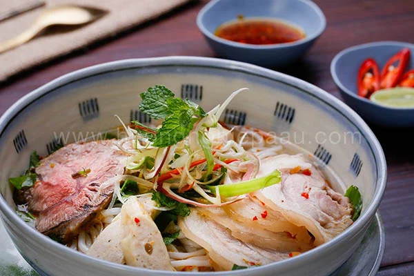

Home
Bun bo hue

Description
Nếu như bạn đang tìm một công thức chuẩn để học nấu bún bò Huế ngon thì đây sẽ là lựa chọn tốt nhất cho bạn. Để món bún bò Huế được hoàn hảo thì không thể thiếu những nguyên liệu đặc trưng như mắm ruốc, chả lá, ớt xanh…
Ingredients:
- 2kg xương ống heo
- 700g bắp bò
- 700g bắp giò heo (nên chọn giò trước)
- 10 cây sả
- Sả băm, tỏi, ớt xay mỗi loại 100g
- 100g ớt xanh
- 200g hành tây
- 100g gừng
- 1 trái thơm chín
- 20 chả lá Huế
- Hành tím/ đầu hành lá, ngò rí xay mỗi loại
- 200gRau muống cọng, hoa chuối
- Cọng bún bò tươi
- Gia vị nấu bún bò Huế: mắm ruốc Huế Bà Duệ, dầu màu điều, nước mắm, đường phèn, muối, dầu ăn
Steps
- Nấu nước dùng
- Làm ớt sa tế
- Trình bày và thưởng thức